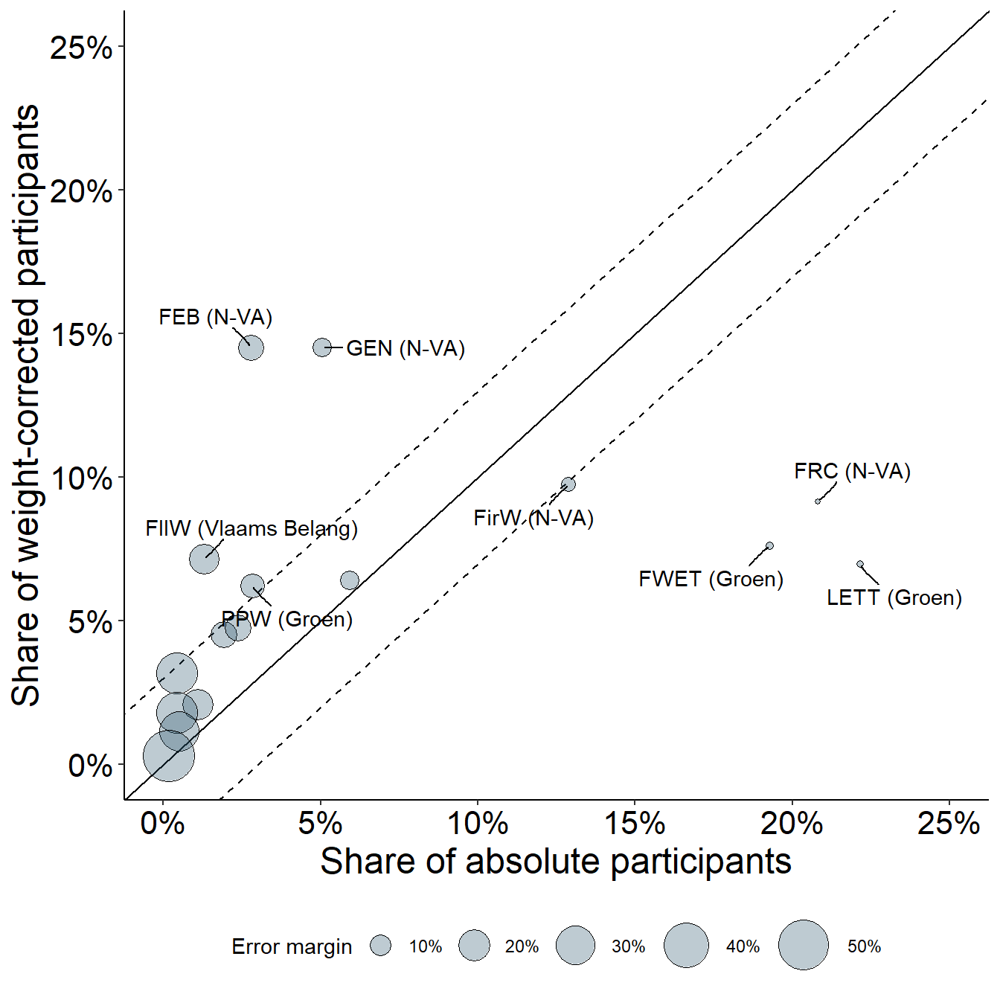

library(tidyverse)
library(DT)
library(scales)
library(ggalluvial)
library(ggrepel)Some observations of the 2024 Veto federal election poll
1 Introduction
In the lead-up to the 2024 federal elections in Belgium, the student newspaper Veto conducted a survey among the students of its alma mater, the KU Leuven. On their website, Veto shows the results university-wide (Nollet et al., 2024a), and split up per faculty (Nollet et al., 2024b). For the university-wide results, the plot provides a breakdown of the votes per faculty for each of the political parties. At the time, this article was heavily discussed and debated in the media, prompting reactions from all sides from the political spectrum. Having a closer look at it, I did spot some interesting oddities that eventually sparked my interest for a more in-depth look.
A first observation in the university-wide plot is that the number of votes exceeds the total number of participants of the faculty. For example, in the faculty of Economics and Business, 137 students have voted for N-VA (Figure 1A), while the faculty plot shows that there are only a total of 50 participants, of which 27 (54%) voted for N-VA (Figure 1B).

So how did these 27 students in the faculty of Economics become 137 students university-wide? Luckily, the authors of the article provided a short description of their methods for analyzing the data:
[…] The results from the students were weighted according to the relative size of the participating faculties […]
This reasoning is sound, as differences in survey participants between faculties can change their impact on the university-wide results. For example, two faculties can differ substantially in student numbers, but still have a comparable number of survey participants. As a result, both faculties will have equal contributions in the overall survey results. To correct for this, Veto used the number of students of each faculty to calculate their relative sizes within the university, and then re-scaled the total number of participants at each faculty accordingly. It should be noted that such a correction process is only valid when you are working with data that is representative for the whole faculty, otherwise you will be extrapolating unreliable data.
Let’s do a quick check for the earlier mentioned faculty of Economics and Business, where 50 students participated in the survey. Going by the student numbers per faculty (KU Leuven, 2024), Economics and Business had a total of 10443 students in 2022-2023 (the most recent academic year with complete data). This means that the voting preferences of 50 students - not even 0.5% of the total faculty - has been extrapolated to represent that of 10443 students! To make matters worse: the faculty of Economics is one of the largest at KU Leuven, representing 16% of the total student body. Expecting that this was just an exception, and that other participant numbers would be more representative, I did the same check for Medicine, another large faculty with 11103 students. Here, 91 students have participated in the survey, a meager 0.8% of the entire faculty.
As a consequence of the low participation and size of both faculties, the weight correction has extrapolated the voting preferences of only 141 students to represent those of 21,546 students, or ~33% of the university. This observation prompted me to have a look at what the data looked like before the correction was applied. Luckily, Veto did a very good job in creating informative plots, making it possible to reverse engineer the raw data from the faculty and university-wide plots.
2 Packages used
3 Exploring the data
All code that is used to generate each figure and table is available under “Show code”.
3.1 Extracting the raw data from the plots was successful, with some minor missing data
To get the raw voting data, I went manually through the 16 faculty plots and recalculated the absolute votes per party from the percentage they scored and the total number of participants in each faculty. From the university-wide plot, I extracted the weight-corrected votes and added the column Correction to the data frame, containing the indicators absolute for the raw votes and weighted for the weight-corrected votes. The complete data set is available as Veto_survey_votes.csv. Next, I collected the faculty student numbers for the academic year 2022-2023 from the KU Leuven website (KU Leuven, 2024), and saved it as KUL_student_numbers.csv. Both data sets were combined, and the result is shown in Table 1.
Show code
#Read the .csv file containing the student numbers.
df_student_numbers <- read_csv("KUL_student_numbers.csv")
#Read the .csv file containing the raw and weighted votes, and join with the student numbers data frame
df_votes <- read_csv("Veto_survey_votes.csv") %>%
group_by(Faculty) %>%
select(-`Participants - absolute`) %>%
pivot_longer(cols = c("Votes - absolute", "Votes - weighted"), names_to = "Correction", values_to = "Votes", names_prefix = "Votes - ") %>%
group_by(Faculty, Correction) %>%
mutate("Participants" = sum(Votes)) %>%
full_join(., df_student_numbers, by = c("Faculty", "Abbreviation")) %>%
arrange(`Students faculty` %>% desc())
#Change Faculty, Abbreviation, Correction and Party to type factor
df_votes$Faculty <- factor(df_votes$Faculty)
df_votes$Abbreviation <- factor(df_votes$Abbreviation)
df_votes$Correction <- factor(df_votes$Correction, levels = c("weighted", "absolute"))
df_votes$Party <- factor(df_votes$Party, levels = c("N-VA", "Groen", "Vooruit", "Open VLD", "CD&V", "PVDA", "Vlaams Belang", "Voor U", "I'm not going to vote", "L'Unie", "I vote blank", "Partij Blanco"))
datatable(df_votes, filter = "top", rownames = F)When summarizing this table for the entire university (Table 2), the total number of students that participated in the survey is 1801. For the weight correction, this number drops to 1735. Annoyingly, this value of weight-corrected votes does not correspond with what is indicated on the university wide plot in the Veto article (also shown in Figure 1), which states that the total number of weight corrected votes equals 1728.
Show code
#Summing the absolute and weight-corrected votes to get the total number of particpants for each.
df_votes %>%
group_by(Correction) %>%
summarize("Total votes" = sum(Votes)) %>%
datatable(rownames = F)The cause of this discrepancy is unknown, but while collecting the data from the plots, I noticed that sometimes the total number of party votes do not add up, or a zero number of votes corresponded to a non-zero percentage (Figure 2). As a guess, I would say these small differences are the result of rounding errors. As a consequence, extracting the exact values from the plots in the article will be impossible. Luckily, these differences are small enough to have a negligible effect in further analyses.
The real question is: why is there even a difference between the absolute and weight-corrected votes at all? Weight correction - as the name implies - should only affect the weight of the votes between faculties, and not the total amount. As of yet, I have no explanation why in the Veto article the weight-corrected plot has 1728 participants, while summing absolute vote counts of the individual faculties yields 1801 participants.
3.2 Non-weighted votes show a less prominent difference between the top-two parties
Having all the data, let’s recreate the university-wide plot with the non-corrected data. This can provide an insight into the overall impact of the weight correction.
One remarkable element in the original plot with weight correction is the big difference between the two largest parties: N-VA scored 25.2%, while Groen came second with 16.8%, a difference of 8.4 percentage points! When looking at the raw voting results (Figure 3), this massive difference has melted away. N-VA still remains the largest party, but Groen and Vooruit follow closely, with a 1.4 and 2.7 percentage point difference respectively.
Show code
#Calculate the percentages of raw and weight-corrected votes for each party.
df_party_pct <- df_votes %>%
group_by(Party, Correction) %>%
summarize("Votes - total" = sum(Votes)) %>%
group_by(Correction) %>%
mutate("Percentage" = `Votes - total`/sum(`Votes - total`))
#Set the colors for each party. Muted colors for weighted, bright colors for non-corrected votes.
party_colors = c("#F1C77E", "#86C186", "#EC5D5B", "#719bba", "#FA8F61", "#BD0F0F",
"#F5E78F", "#E28DC9", "#CCCCCC", "#CCCCCC", "#CCCCCC", "#CCCCCC",
"#dc9417", "#4A904A", "#BF1A17", "#065788", "#E04300", "#7B0A0A",
"#ECD332", "#CD349F", "#8B8B8B", "#8B8B8B", "#8B8B8B", "#8B8B8B")
#Plot.
ggplot(df_party_pct) +
geom_col(aes(x = Party, y = Percentage, fill = interaction(Party, Correction)), color = "black", position = position_dodge2(width = 0.9), show.legend = F) +
geom_text(aes(x = Party, y = Percentage - ifelse(Percentage < 0.015, -0.015, 0.02), label = round(Percentage*100, 1)), position = position_dodge2(width = 0.9), angle = 90) +
scale_y_continuous(labels = scales::percent, breaks = seq(0, 0.3, 0.05)) +
scale_fill_manual(values = party_colors) +
coord_cartesian(ylim = c(0, 0.3)) +
theme_classic() +
theme(axis.title.x = element_blank(),
axis.title.y = element_text(size = 18),
axis.text.x = element_text(size = 16, color = "black", angle = 45, hjust = 1),
axis.text.y = element_text(size = 16, color = "black")
)
From Figure 3 , it seems that the weight correction had an opposite effect on the two largest parties: inflating the votes of N-VA, while reducing those of Groen, creating the massive gap between the two. The question now is: is the data that has been adjusted by the weight correction trustworthy?
3.3 The rationale behind the weight correction
From the description in the Veto article, we know that the correction was based on the relative sizes of the individual faculties, but what does this exactly mean?
Let’s take the faculty of Science as an example: Table 1, states that 347 students of this faculty participated in the survey, and Table 2 shows that 1801 students participated in the survey. Consequently, the faculty of Science contributes 19.27% (= 347/1801) participants to the survey. However, with its 5249 students, the faculty only represents 7.12% of the total university student body. In the survey, the 1801 participants represent 100% of the university, and 7.12% of these should be from the faculty of Science, not 19.27%. As a result, the total participants are down-scaled from 347 (19.27% of 1801) to 129 (7.12% of 1801). These 129 participants are then redistributed according to the original voting results of the faculty (so for example: 23.3% for the party Groen now equals 31 “weight-corrected” people, and not the original 81).
The faculty of Science is an example where the number of participants far exceeds the relative size of the faculty within the university, and as a result undergoes a downward correction. Earlier I discussed two examples where the opposite happens: Economics and Medicine. Each representing 14%/15% of the university, but only 2.78%/5.05% of the survey, so they get a drastic upward correction.
To visualize this, the share of each faculty in survey participants is compared to the relative faculty size, and the faculty share in weight-corrected participants (Figure 4), making the aforementioned up-scaling effect of Medicine and Economics clearly visible. On the other side are the faculties of Science, Law and Criminology, and Arts. All three have been drastically down-scaled due to their high survey participant numbers (Figure 4).
Show code
#Calculate the relative proportions of absolute participants, weight-corrected participants and faculty size.
df_fac_tot <- df_votes %>%
group_by(Faculty, Abbreviation, `Students faculty`, Correction) %>%
summarize("Total participants" = sum(Votes)) %>%
pivot_wider(names_from = Correction, values_from = `Total participants`) %>%
ungroup() %>%
mutate("Share of weight-corrected participants" = weighted/sum(weighted),
"Share of absolute participants" = absolute/sum(absolute),
"Relative size of faculty" = `Students faculty`/sum(`Students faculty`)) %>%
pivot_longer(cols = c(6:8), names_to = "Type", values_to = "Percentage")
#Set variable Type as factor and set levels
df_fac_tot$Type <- factor(df_fac_tot$Type, levels = c("Share of absolute participants",
"Relative size of faculty",
"Share of weight-corrected participants"))
#Rename the levels of the factor "Type" for a cleaner plot.
df_fac_tot$Type <- fct_recode(df_fac_tot$Type,
"Share of \n absolute participants" = "Share of absolute participants",
"Relative size \n of faculty" = "Relative size of faculty",
"Share of weight- \n corrected participants" = "Share of weight-corrected participants")
#Sort the levels of the factor "Faculty" according to the number of students.
df_fac_tot$Faculty <- fct_reorder(df_fac_tot$Faculty, df_fac_tot$`Students faculty`, .desc = T)
#Create two dataframes to add labels to the plot, even indexes of the factor "Faculty" on the left, and odd ones on the right.
df_labels_fac_even <- df_fac_tot %>%
filter(as.integer(Type) == 1) %>%
arrange(desc(Faculty)) %>%
mutate("CumSum" = cumsum(Percentage) - Percentage/2) %>%
filter(as.integer(Faculty)%%2 == 0)
df_labels_fac_odd <- df_fac_tot %>%
filter(as.integer(Type) == 3) %>%
arrange(desc(Faculty)) %>%
mutate("CumSum" = cumsum(Percentage) - Percentage/2) %>%
filter(as.integer(Faculty)%%2 != 0)
#Plot.
fac_colors <- hue_pal()(16)
ggplot(df_fac_tot) +
geom_flow(aes(x = Type, y = Percentage, alluvium = Faculty, fill = Faculty), alpha = 0.25, color = "#595655", width = 0.3, curve_type = "linear", show.legend = F) +
geom_col(aes(x = Type, y = Percentage, fill = Faculty), width = 0.3, color = "black", show.legend = F) +
#Labels on the left.
geom_text_repel(data = df_labels_fac_even, aes(x = Type, y = CumSum, label = Abbreviation), max.overlaps = Inf, nudge_x = -0.75, segment.curvature = 0.1, segment.ncp = 3, segment.inflect = T, segment.square = F, segment.color = "#6b696c") +
#Labels on the right.
geom_text_repel(data = df_labels_fac_odd, aes(x = Type, y = CumSum, label = Abbreviation), max.overlaps = Inf, nudge_x = 0.75, segment.curvature = 0.1, segment.ncp = 3, segment.inflect = T, segment.square = F, segment.color = "#6b696c") +
scale_y_continuous(labels = scales::percent, breaks = seq(0, 1, 0.2)) +
scale_fill_manual(values = fac_colors) +
theme_classic() +
theme(axis.title.x = element_blank(),
axis.title.y = element_text(size = 18),
axis.text = element_text(size = 16, color = "black")
)Since the relative size of the faculties is the basis of the weight correction, it is evident that the columns “Relative size of faculty” and “Share of weight-corrected participants” in Figure 4 are almost identical. The reason that they are not an exact match is probably because I used the KU Leuven 2022-2023 faculty numbers for calculating relative faculty size, while Veto might had access to a different source of student numbers for their weight correction.
3.4 Several faculties have high error margins
The number of participants is extremely low for several faculties. For example, Cannon Law, Architecture, Pharmaceutical sciences and Theology all have less than 10 participants. Because of this, Veto added a warning to the faculty plots that the outcome of these faculties are probably not relevant (yet they still applied a weight correction and used the data for their university-wide plot).
In order to have a quantifiable measure of how reliable the faculty data are , I calculated the margin of error:
\[ \text{Margin of error} = z\cdot\sqrt{\frac{p(1-p)}{N}} \]
Where \(z\) is the z-score for a certain confidence level (1.96 is mostly used, and corresponds with a 95% confidence), \(p\) is the proportion of the result (i.e. the score of a party), and \(N\) the number of participants. Most surveys in (trustworthy) newspapers and websites will use a margin of error of ~3% at 95% confidence. This means that 95% of the time, the reported result of a party will lie within an interval of ±3 percentage points. As an example: a score of 20 ± 3% for Vooruit conveys that when you repeat the same survey 100 times, 95 times the obtained results will lie between 17% and 23% for Vooruit. Hence, the smaller the margin of error, the more trustworthy the results.
For the Veto poll, I calculated the margin of error for the largest party per faculty (since \(p\) depends on the party score, the error will be larger for large parties and vice versa). Percentage scores were calculated using the non-corrected votes. The results can be found in Table 3.
Show code
df_fac_party_pct <- df_votes %>%
group_by(Faculty, Correction) %>%
slice_max(Votes, with_ties = F) %>%
pivot_wider(names_from = Correction, values_from = c(Votes, Participants)) %>%
ungroup() %>%
mutate("Share of absolute participants" = (Participants_absolute/sum(Participants_absolute)) %>% round(., 4),
"Share of weight-corrected participants" = (Participants_weighted/sum(Participants_weighted)) %>% round(., 4),
"Percentage_vote_absolute" = (Votes_absolute/Participants_absolute) %>% round(., 4),
"Error margin" = (1.96*sqrt((Percentage_vote_absolute*(1 - Percentage_vote_absolute))/Participants_absolute)) %>% round(., 4)) %>%
select(Faculty, Abbreviation, Party, `Percentage_vote_absolute`, `Students faculty`, `Share of absolute participants`, `Share of weight-corrected participants`, `Error margin`) %>%
arrange(desc(`Students faculty`))
datatable(df_fac_party_pct, filter = "top", rownames = F)The faculty of Law and Criminology has the smallest error margin (N-VA, 23.2 ± 4.27%), followed by Arts (Groen, 27.3 ± 4.37) and Science (Groen, 23.3 ± 4.45). Not surprisingly, all of these are faculties with a high number of participants. The median error of all faculties is 14%. Not a single faculty has an error below 3%, and four even exceeded 30% error. It is therefore clear that the survey data from most faculties is not statistically significant, and no sound conclusions can be drawn from it.
To visualize all of this, I plotted the share of participants of the survey versus the share of participants after weight correction, and assign the error margin to the size aesthetic:
Show code
df_labels <- df_fac_party_pct %>%
filter(`Share of absolute participants` > `Share of weight-corrected participants` + 0.03 | `Share of absolute participants` < `Share of weight-corrected participants` - 0.03)
ggplot(df_fac_party_pct) +
geom_abline(slope = 1) +
geom_abline(slope = 1, intercept = 0.03, lty = 2) +
geom_abline(slope = 1, intercept = -0.03, lty = 2) +
geom_point(aes(x = `Share of absolute participants`, y = `Share of weight-corrected participants`, size = `Error margin`), pch = 21, fill = "#29546a4D") +
geom_text_repel(data = df_labels, aes(x = `Share of absolute participants`, y = `Share of weight-corrected participants`, label = paste0(Abbreviation, " (", Party, ")")), box.padding = 0.75, segment.curvature = -0.1, segment.ncp = 3, segment.angle = 20, max.overlaps = Inf) +
scale_size_continuous(range = c(1, 12), labels = scales::percent) +
scale_x_continuous(labels = scales::percent) +
scale_y_continuous(labels = scales::percent) +
coord_cartesian(xlim = c(0, 0.25), ylim = c(0, 0.25)) +
theme_classic() +
theme(legend.position = "bottom",
axis.title = element_text(size = 18),
axis.text = element_text(size = 16, color = "black"))

The resulting plot in Figure 5 gives a good overview of everything that has been discussed up to now. Lots of faculties with high error margins have been scaled up by the weight correction (Figure 5, large bubbles above the first bisector), inflating the weight of poor-quality data. On the other hand, three faculties had an unusually high number of participants, but have been down-scaled by the weight correction, reducing the impact of (borderline) decent-quality data (Figure 5, small bubbles below the first bisector).
As a consequence, the university-wide plot with weight correction - as made by Veto - unfortunately lacks any statistical power, and no real conclusions can be drawn from it.
4 Conclusions
The data acquired by the Veto survey in itself could have been very informative, if processed correctly. The writers of the article know very well that a survey with low number of participants yields data that cannot be completely trusted. They even warn for it in their own article, where faculty plots with low participant numbers are accompanied by the statement “The response for this faculty is very low, so take the results with a grain of salt.” So why bother correcting data of which you know it isn’t reliable in the first place? This is reminiscent of an anecdote recited by Charles Babbage, inventor of the first (mechanical) computing engines:
On two occasions I have been asked, “Pray, Mr. Babbage, if you put into the machine wrong figures, will the right answers come out?” … I am not able rightly to apprehend the kind of confusion of ideas that could provoke such a question.
Charles Babbage
Or more crudely stated: garbage in, garbage out. Correcting low-quality data does not suddenly allow you to make statistically sound claims. Paradoxically, not correcting the data and presenting it as the voting preferences of 1801 people who happen to study at KU Leuven would have probably been the better approach.
As mentioned earlier, this survey was widely discussed in the media and politicized in the lead-up to the 2024 federal elections. Several newspapers reported on its conclusions, and De Standaard (De Smet, 2024) called upon the help of KU Leuven statistics professor Geert Molenberghs, who likewise stated that the number of participants is too low and differs too much between faculties to draw any sound conclusions. In a reaction to this, the editor-in-chief of Veto responded:
[The survey] is not worthless, because the trend is in line with expectations […]
Having some experience with setting up scientific experiments and performing the necessary diligence to make them statistically sound, this statement irks me to no end. If the results confirm what you already expected, then why even bother doing a survey in the first place? This is a beautiful example of confirmation bias: the data fits my expectations, so it must be correct. With no sufficient data to confirm or deny it, the “trend” of which the editor-in-chief speaks cannot be discerned from random noise. If the number of points is low enough, you will always be able to fit a line through them, one way or another.
All in all, the effort was good, and the authors did think about the right ways to correct for faculty weight, but it is a shame they applied it on data that is severely lacking in statistical power.
References
De Smet, D. (2024). Peiling studentenblad veroorzaakt ophef: Maakt N-VA zich terecht druk om “groene” proffen? De Standaard. https://www.standaard.be/cnt/dmf20240527_97355026
KU Leuven. (2024). Student numbers. Website. https://www.kuleuven.be/prodstudinfo/v2/50000050/aant_det_en_v2.html
Nollet, K., Douchy, P., & Duwel, S. (2024b). Peiling Veto: Bekijk hier hoe jouw faculteit stemde. Veto. https://www.veto.be/sociaal/peiling-veto-bekijk-hier-hoe-jouw-faculteit-stemde/342446
Nollet, K., Douchy, P., & Duwel, S. (2024a). Peiling Veto: N-VA is weer de grootste partij bij studenten. Veto. https://www.veto.be/sociaal/peiling-veto-n-va-is-weer-de-grootste-partij-bij-studenten/342378